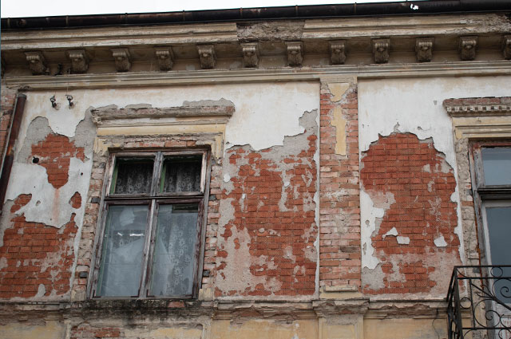
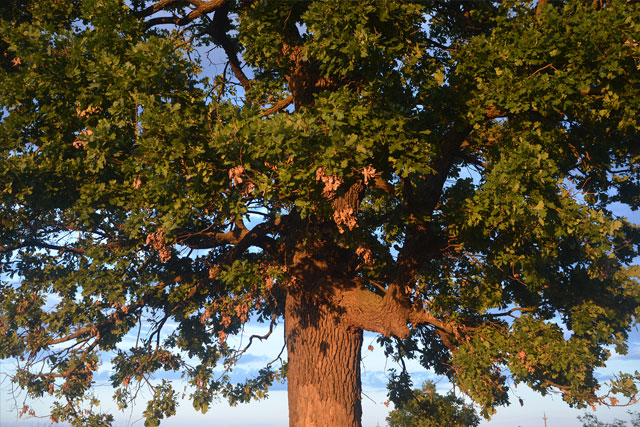

5 Mai 2023
Păstrând trecutul în prezent: Importanța conservării clădirilor de patrimoniu
Clădirile de patrimoniu reprezintă mărturii ale istoriei noastre, povestind povești ce au rezistat trecerii timpului. Conservarea lor devine o responsabilitate crucială pentru a păstra identitatea culturală și arhitecturală a unei comunități.
Prin conservarea clădirilor de patrimoniu, nu doar protejăm structuri materiale, ci și cultivăm o legătură emoțională între generații, oferind oportunitatea de a învăța din trecut și de a inspira viitorul prin bogăția și autenticitatea acestor monumente istorice.
5 Mai 2023
Călătorie prin frumusețea naturii: Fotografia de peisaj ca o fereastră către liniște și admirație
În ochii obiectivului, natura se dezvăluie în toată splendoarea ei, încântându-ne cu peisaje fascinante ce ne transportă într-o călătorie emoțională prin culori vibrante și forme impresionante!
Fotografia de peisaj nu numai că ne oferă ocazia de a captura momentele fugitive ale naturii, dar ne îmbogățește și sufletul, aducând liniște interioară și un profond sentiment de conectare cu măreția și armonia universului.

5 Mai 2023
Guardienii tăcuți ai trecutului: Fascinația copacilor milenari
Copacii milenari, cu înălțimi impunătoare și trunchiuri sculptate de secole de existență, reprezintă martori vii ai istoriei noastre, oferindu-ne o conexiune profundă cu natura și amintindu-ne de efemeritatea noastră în fața măreției timpului.
Aceste relicve vii au supraviețuit îndelungate perioade de schimbări climatice, calamități naturale și activități umane, servind drept simboluri ale rezistenței și persistenței. Protejarea și respectarea copacilor milenari este o responsabilitate crucială, pentru a le permite să continue să ne încânte și să ne inspire cu înțelepciunea lor ancestrală.